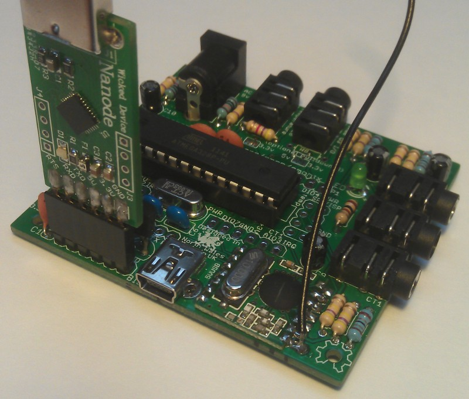

Hi all,
Just built my first board, the emonTx.
I have it connected up with USB power and USB data connection via the FDTI plug.
Arduino software seems to be running properly on my PC (Old Dell running Ubuntu 10.4)
Tools>Serial Port sees the board as /dev/ttyUSB0 when the board is connected and doesn't see anything when it's not.
When I try to upload the blinkwithoutdelay sketch I receive the following error:
avrdude: stk500_recv(): programmer is not responding.
I've read the troubleshooting guide at Arduino home but can't find anything there to help.
Where should I next look?
Thanks,
Richard
Re: RESOLVED: emonTx - uploading the blinkwithoutdelay sketch; Fallen at the first hurdle
Have you selected 'Uno' under tools>board?
Re: RESOLVED: emonTx - uploading the blinkwithoutdelay sketch; Fallen at the first hurdle
I have.
Re: RESOLVED: emonTx - uploading the blinkwithoutdelay sketch; Fallen at the first hurdle
After more reading of the Arduino support boards, should the green led be lit when power is applied to the board?
The blue led on the FTDI plug lights up when it's plugged in but the green led on the emonTx board does not?
Re: RESOLVED: emonTx - uploading the blinkwithoutdelay sketch; Fallen at the first hurdle
No the green LED should not Light. Try checking that the emonTx is getting power, instructions towards the end of the build guide: http://ichilton.github.com/openenergymonitor/emontx/build_guide.html. This is a new build guide that is still in the making.
Re: RESOLVED: emonTx - uploading the blinkwithoutdelay sketch; Fallen at the first hurdle
I've checked the voltage between the 3V and GND sockets in the line of sockets between the FTDI connecter and the chrystal.
The voltage is measured at 3.87V.
Is that out of range?
Re: RESOLVED: emonTx - uploading the blinkwithoutdelay sketch; Fallen at the first hurdle
This is a bit high, I think it's because you're powering the emonTx from both the FTDI and mini-usb. Best to only power it either or. Try powering it with only the FTDI and measure the voltage again. Although I don't think this is the problem, it should still work.
Have you got a normal Arduino? Can you program this via your computer?
Re: RESOLVED: emonTx - uploading the blinkwithoutdelay sketch; Fallen at the first hurdle
If I just use the FTDI connector with the connector board the same way up as the emonTx board, the voltage measured between the 3.3V hold and the GND hole is .438V. If I put the connector board the other way up, it gets 3.3V.
Either way the software does the same thing and gives the same error.
Re: RESOLVED: emonTx - uploading the blinkwithoutdelay sketch; Fallen at the first hurdle
Here's a picture of the correct orientation of the FTDI connector, the ground pin label on the FTDI and the emontx will be aligned.

What operating system are you using?
Re: RESOLVED: emonTx - uploading the blinkwithoutdelay sketch; Fallen at the first hurdle
As for another Arduino board I have the emonBase and the emonGLCD to build.
Any recommendations as to which I should try first?
Re: RESOLVED: emonTx - uploading the blinkwithoutdelay sketch; Fallen at the first hurdle
That's the way that I have it. That gives me 3.3V
When you ask for the O/S, I assume you mean my PC?
It's running Ubuntu 10.4.
I used the guide at http://www.pluggy.me.uk/arduino-ubuntu/ to set it up.
Re: RESOLVED: emonTx - uploading the blinkwithoutdelay sketch; Fallen at the first hurdle
The guide you followed is using an old version of Arduino IDE. You need Arduino 1.0. Download from here: http://arduino.cc/en/Main/Software.
Try following the guides to setting up with Ubuntu on the Arduino website: http://www.arduino.cc/playground/Learning/Linux.
I'm using Ubuntu 11.10, no setup was needed at all. I just downloaded Arduino 1.0, marked the filed 'arduino' as executable then double clicked to run it.
Re: RESOLVED: emonTx - uploading the blinkwithoutdelay sketch; Fallen at the first hurdle
Similar problems here.
Everything plugged together properly. Voltages seem just fine. Blue LED on the FTDI card.
I know the drivers work (I'm on a Mac) because my Jeelink works fine, and that has an internal USB to FTDI interface.
I'm not the neatest solderer in the world but I've checked all of the connections with a magnifying glass, as well as zooming in with a camera, and they look fine.
But I'm getting:
Using Port : /dev/tty.SLAB_USBtoUART
Using Programmer : arduino
Overriding Baud Rate : 115200
avrdude: Send: 0 [30] [20]
avrdude: Send: 0 [30] [20]
avrdude: Send: 0 [30] [20]
avrdude: ser_recv(): programmer is not responding
avrdude: stk500_recv(): programmer is not responding
Anyone have any ideas where to look?
P.
Re: RESOLVED: emonTx - uploading the blinkwithoutdelay sketch; Fallen at the first hurdle
Just re-checked VCC - it's a nice 3.3V when the board is powered via the USB connection, but it's 3.98V when powered via the FTDI card.
Does this mean I've messed up somewhere?
5V is 5V in both cases.
P.
Re: RESOLVED: emonTx - uploading the blinkwithoutdelay sketch; Fallen at the first hurdle
SOLVED - It wasn't my soldering, it was whoever soldered the FTDI board! There was a solder splash shorting out a couple of the pins on the reverse side of the FTDI connector.
Hopefully this will help anyone else that comes across a similar problem.
P.
Re: RESOLVED: emonTx - uploading the blinkwithoutdelay sketch; Fallen at the first hurdle
Incidentally, I think that photo of the FTDI attached (above) would be a useful addition to the build guide. I know that GND has to be aligned on both, but it's not easy to see which pin in GND on a fully populated eMonTX. That photo would have saved me 15 minutes of searching!
P.
Re: RESOLVED: emonTx - uploading the blinkwithoutdelay sketch; Fallen at the first hurdle
It is quite hard to see which is the GND end - I looked at the underside of the pcb to see where the ground plane connects, then put a spot of paint on the end of the header.
For what it's worth, I've made up a short ribbon cable to put between the FTDI and the target board. That way, it will be much harder to damage the connectors and/or the pcb if subjected to mishandling.